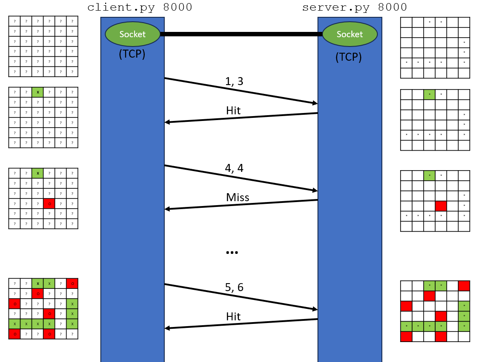

Programming Assignment 1: Battleship with Sockets
Assigned Friday September 7th
Due Sunday September 22nd @11:59 PM
Overview
In this assignment, you will gain experience using sockets to write network applications. You will develop a client-server application that plays a one player version of battleship. If you are not familiar with the game battleship, you should first spend some time
learning the game . You are allowed to use any programming language you'd like, but it MUST use socket communication. I recommend Python, but if you another language, then Reese or Justin will be unable to help you.
GitHub Repo Setup
You will need to setup a private github repository for all your files. You will have one GitHub repository for all assignments in this course, with each assignment getting its own specific folder.
Visit
https://github.com/new to create a new repository. You should name your repository
[last_name]-[first_name]-csci466. Make sure that you set your repository to be private.
If we find that your repository is public, you will receive an automatic ZERO.
After creating your repository, go into the "settings" tab, and then click the "collaborators" tab. You will need to add both Reese and Justin as collaborators on the repository.
- Reese's GitHub username: @reesep
- Justin's GitHub username: @jdmau72
If we do not have access to your repository, then we will be unable to grade your submission and you will receive a zero.
Instructions
For this assignment, you will develop two programs:
client.py and
server.py .
server.py
This file will be your server. The server is provided a port number via command line input, and will begin to listen on that port for a socket connection.
The server will randomly generate a 6x6 battleship board, with a 4 length ship, a 3 length ship, and a 2 length ship. It is up to you how you would like to orient your ships, but they should be in random locations. Ships cannot overlap, but they are allowed to touch each other. The server will receive a guess from the client (i.e row 3 column 4) and will look at the board. If the guess lands a hit, then "Hit" should be sent back to the client. If the guess lands a miss, then "Miss" should be sent back to the client.
python server.py [PORT_NUMBER]
client.py
This file will be your client. This program should connect to the server via a TCP socket. Your program should prompt the user a guess (row # and column #), and the guess will be sent via sockets to the server, and the server will send back the result of the guess (hit or miss). Your client should print out the current status of board before each guess. Your client program will also need to keep track of when the game is over, and how many guesses it took to sink every battleship on the server.
python client.py [PORT_NUMBER]
example: python client.py 5001 //port 5001

Expected Output
- Watch this video demonstration to see program behavior and output.
- You don't have to match the sample output exactly, but it should look similar
Video Demo
You will record a video demo that highlights the functionality of your program. You can do this with Panopto, or you can record with another recording software (such as OBS) and post it to youtube as private or unlisted.
The video should show you running
server.py and
client.py program. Your video should demonstrate you sinking a battleship and missing a battleship, and show the client server interaction. You do not need to explain your code. Your video demo should not be longer than 6 minutes. If you do not record a video demo, then you will lose
a very large amount of points.
Submission Instructions
All your files need to be pushed to a
/PA1 folder in your
[last_name]-[first_name]-csci466 repository. You need to include a
README.md in your
/PA1 folder. The link to your video demo should appear at the very top of your README. Additionally, your README should have the names of each group member, a section that describes how to run your program(s), and a link to your video demo. When you are ready to submit, you will submit
just the link to your private
[last_name]-[first_name]-csci466 repository.
Partners
You are allowed to work with two partners (groups of three). If you work with a partner, each member needs to create their own private github repository. When you are ready to submit to D2L, each group member needs to submit the link to the repo. Make sure you clearly mention in your README/Video/Submission who the group members are.
Grading Rubric (100 Points)
| Criteria |
Points |
| client.py exists, and takes a port number via the command line |
5 |
| server.py exists, and takes a port number via the command line |
5 |
| server.py randomly generates the 6x6 battleship bored properly |
20 |
| client.py prompts the user for a guess and sends the guess via a socket |
10 |
| client.py keeps track of the current status of the board and prints it out before each new guess |
20 |
| server.py identies hits and misses properly and sends them back to the user via a socket |
10 |
| client.py is able to identify when the game is over, and how many guesses it took to win |
10 |
| Your files are in a /PA1 folder in a private github repository |
10 |
| There is a README.md file in your github repository that has your name(s), video demo link, and how to run your program |
10 |
Penalties
- Running code results in errors before runtime: -30 points
- Running code results in errors during runtime: -15 points
- No video demo: -50 points
- Your repository is public: -100 points
Helpful Examples
Solution